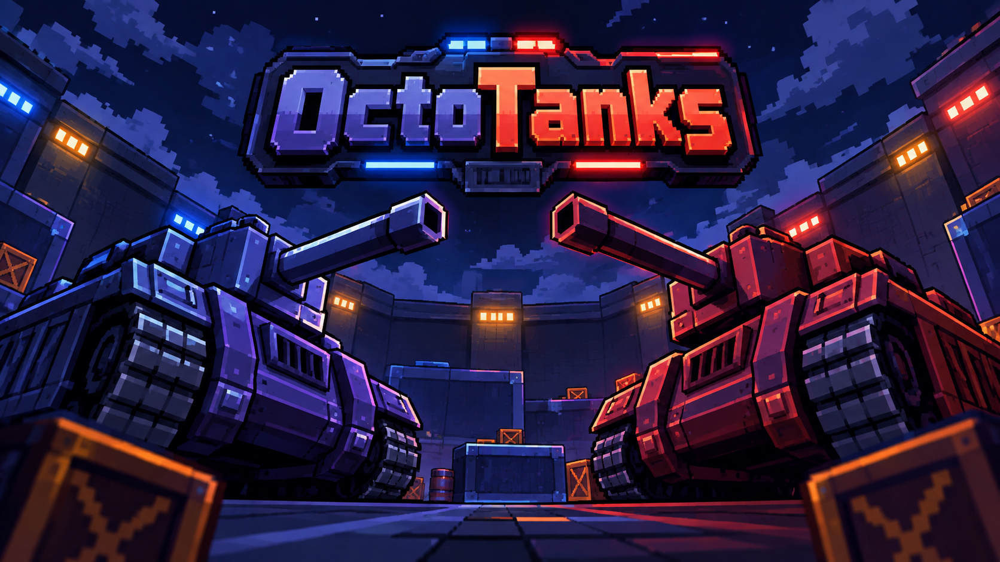

OctoTanks
Criador: Erick Alves
OctoTanks é um duelo local entre dois tanques em uma arena cheia de obstáculos. Mire, ataque e sobreviva para derrotar seu adversário!
Baixar JogoGUIA
Utilize o seu tanque para eliminar o seu adversário! Mexa o celular para rotacionar o tanque e use os controles para atirar e deslocar! São necessários 3 dispositivos: um exibe a arena e os outros dois controlam cada jogador.